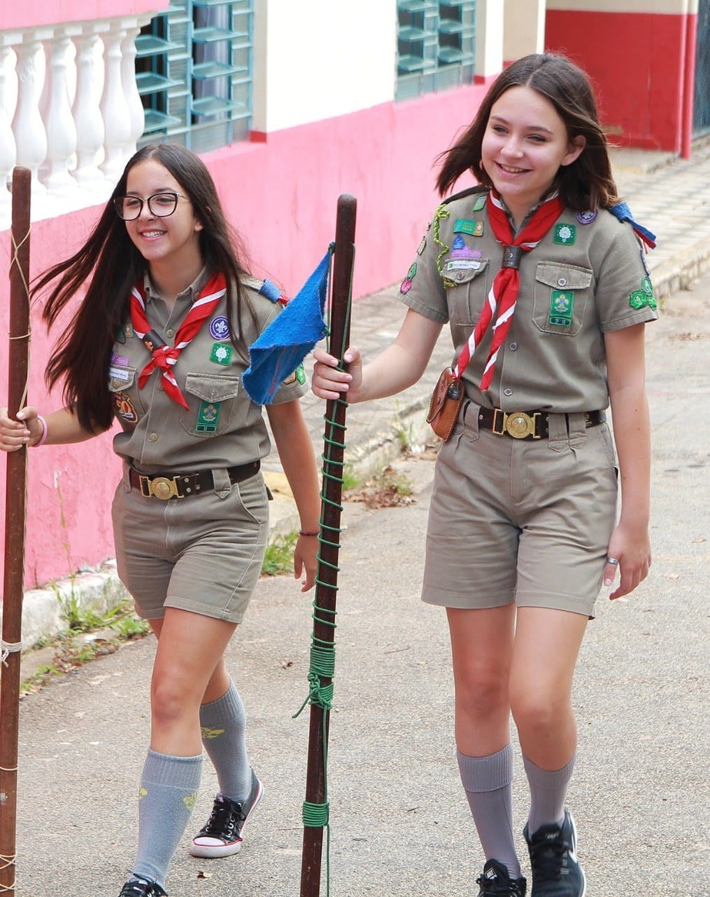
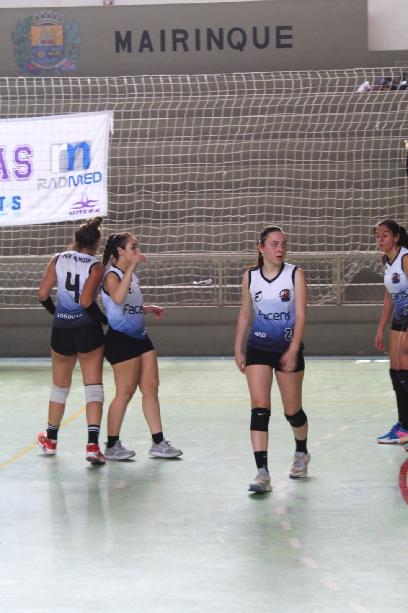
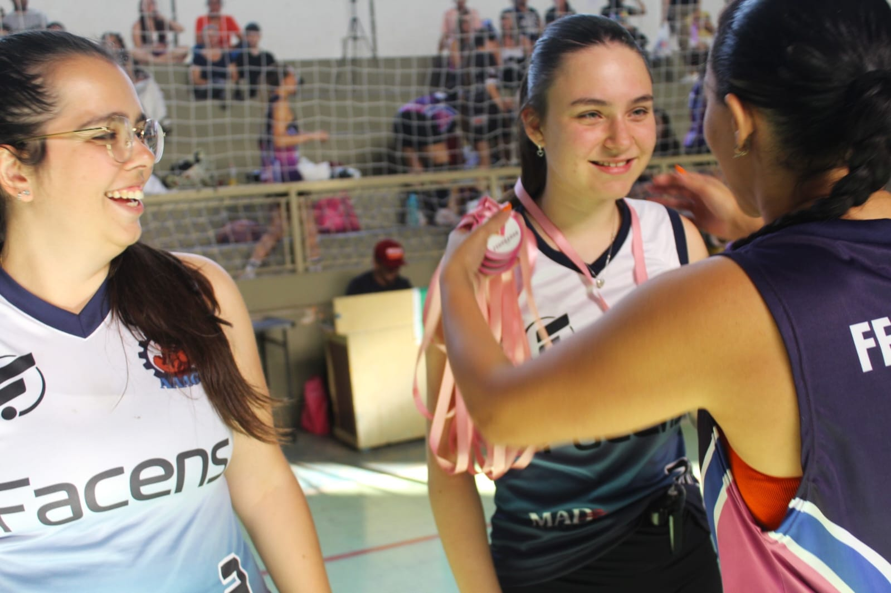
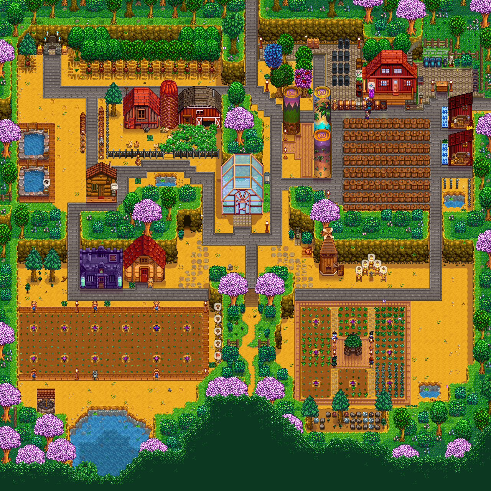

Meus hobbies:
Durante a minha vida vida tive diversos hobbies, como natação, sapateado, sapateado irlandes, ballet, ginástica artística,
basquete, vôlei, já fui escoteira, já gostei de ler, entre outros.
Hoje meu hobbie é jogar vôlei e jogar Stardew Valley.
Fotos minhas praticando esses hobbies:
-
Comecei a dançar aos 6 anos e parei aos 14, fiz diversas modalidades, como jazz, sapateado, ballet.

-
Fui escoteira dos 10 aos 15 anos, gostava muito de tudo que envolvia o escotismo, conquistei a insígnia máxima, a Liz de Ouro.

-
Quando assisti o vôlei nas olimpiadas de 2020, que ocorreu em 2021, me interresei muito pelo esporte, comecei na escola e no meu condomínio, agora jogo pela Facens.


-
Meu hobbie mais recente é jogar Stardew Valley, um jogo de fazenda multiplayer. Comecei a jogar ele por influência da minha colega de classe Isabella Valim.

Links para outras páginas :